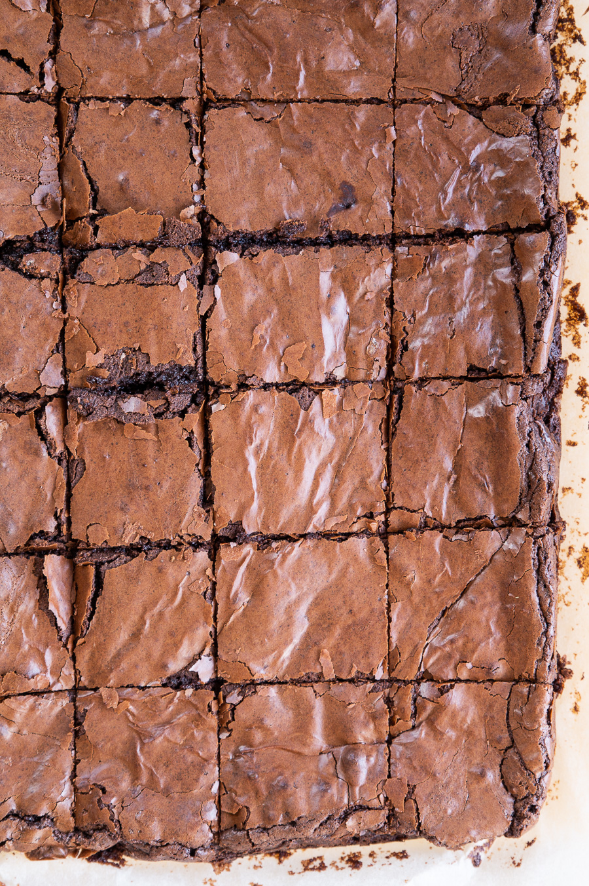

Brownies

Description
The easiest and best brownie recipe you will ever try. Stolen from qtcinderella.
Ingredients
- 113g butter
- 1 tbsp oil
- 100g brown sugar
- 134g sugar
- 2 eggs
- 68g flour
- 50g cocoa
- 1/4 tsp salt
Steps
- Preheat your oven to 175 degrees celsius
- Melt butter in microwave(Remember to cover it, so you wont have to clean your microwave after).
- Combine wet ingredients(butter, oil, brown sugar, sugar and eggs) in a bowl large enough to also hold the rest of the ingredients. The more you mix the wet ingredients and get the sugars disolved the glossier the top of your brownies will be at the end.
- Sift dry ingredients(flour,cocoa and salt) into a bowl and mix together
- Add dry ingredients into the wet ingredients and mix well.
- Butter and line a 9X9 baking tin
- Pour you batter in and give the tin a good tap to ensure its settled nicely.
- Bake for 20 minutes then check it. Give it a shake, if still jiggly in the middle give it 5 more minutes. Continue until not jiggly in the middle.
- Flip out onto a cooling rack and let cool to room temperature.